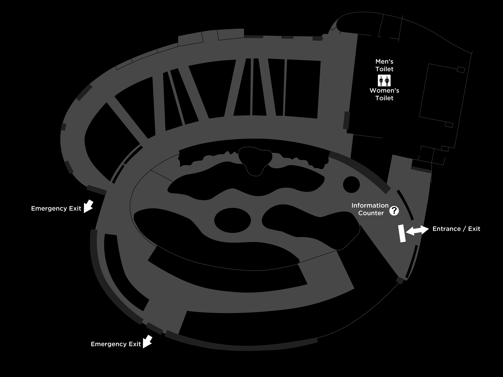

Main Venue Map
01 Main Venue Map

02 Exhibition Information
Exhibition Dates
2026.10.31–11.15
Closed on Mondays.
Opening Hours
Tue–Sun 09:00–17:00
On Oct 31, opening hours are extended until 02:00 the following day for Nuit Blanche Taipei.
Venue
Taipei Expo Park, Xinsheng Park Area – Taipei Collectible Botanical Garden
No. 16, Binjiang St., Zhongshan Dist., Taipei City
03 Transportation Information
01. MRT
YUANSHAN STATION
- Walk to the exhibition area.
- Transfer to Red 50 and get off at Xinsheng Park.
- Transfer to bus 542 and get off at Jilin Road Terminal.
DAZHI STATION
- Transfer to bus 72 or 722 and get off at Xinsheng Park (Lin An Tai).
ZHONGSHAN ELEMENTARY SCHOOL STATION
- Walk to the exhibition area.
02. Bus
MINZU EAST ROAD INTERSECTION
109, 203, 277, 279, 280, 280 Direct, 542, 606, 606 Commuter, 612, 685, Dunhua Main Line
XINSHENG PARK
Red 50, 685, Citizen Minibus 9
XINSHENG PARK (LIN AN TAI)
72, 222, 286 Shuttle, 298, 643, 676, Citizen Minibus 9, Songjiang–Xinsheng Main Line, Fuxing Main Line
JILIN ROAD TERMINAL
542
03. WeMo Shared Scooters
During the festival, a dedicated WeMo scooter rental and return zone will be available at the Xinsheng Park Surface Parking Lot (outside Taipei Xinsheng Sports Center). Visitors can take a WeMo scooter directly to the festival venue or explore Art in Stores at their own pace.